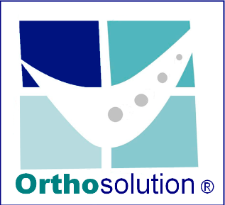

Bienvenido a Orthosolution Chile
19 versión

Quiénes somos
Orthosolution Chile tiene como misión:
- Propender al ejercicio, perfeccionamiento, desarrollo y educación teórico-práctica continuada en Ortopedia Funcional de los Maxilares y Ortodoncia.
- Promover la generación de espacios de estudio, elaboración de proyectos y perfeccionamiento en el área de la Ortopedia Dentomaxilar y Ortodoncia.
- Ofrecer cursos, conferencias, simposios, eventos y reuniones profesionales.
- Realizar la certificación que valide los conocimientos adquiridos en la formación en Ortopedia Funcional de los Maxilares, Ortodoncia, Ortopedia y Dentomaxilofacial.
- Garantizar que la certificación se realice conforme al Reglamento de Certificación de esta institución.

OBJETIVOS GENERALES S DEL CURSO
- Capacitar al Cirujano Dentista en los fundamentos básicos de la Ortodoncia y la Ortopedia Funcional de los Maxilares.
- Capacitar al Cirujano Dentista en el Diagnóstico, medidas Preventivas, medidas Interceptivas y Tratamientos correctivos de las distintas anomalías dentomaxilares.
- Capacitar al Cirujano Dentista en el manejo clínico de la Ortopedia Funcional de los Maxilares (aparatos removibles) y la Ortodoncia (Arco Recto).
Objetivos Específicos
Al finalizar el Diplomado, los alumnos serán capaces de:
- Diagnosticar las anomalías dentomaxilares con el fin de prevenirlas, interceptarlas y tratarlas una vez instaladas.
- Conocer las alternativas terapéuticas ortopédicas y ortodónticas disponibles para cada anomalía.
- Interpretar los estudios de modelos, fotográficos y cefalométricos para el adecuado diagnóstico de las anomalías.
- Elaborar planes de tratamiento para cada anomalía, en tratamientos de una o dos fases, según sea el caso.
- Conocer la etiología de las malaoclusiones con el fin de interceptarlas y prevenirlas.
- Identificar la influencia del crecimiento y desarrollo en la instalación y evolución de las anomalías dentomaxilares.
- Planificar tratamientos ortopédicos y ortodónticos adecuados dependiendo de la edad y desarrollo del paciente.
- Reconocer los principios de la Ortopedia Funcional de los Maxilares y la importancia del equilibrio de la Matriz Funcional desde un enfoque multidisciplinario.
- Realizar una adecuada documentación de los casos de ortopedia y ortodoncia de acuerdo a un protocolo de tratamiento.

Presentación del Doctor y Docente
-
Dr. Sergio Cousiño Mútis
-
Cirujano Dentista U. de Chile
-
Diplomado Gestión en Odontología Facultad de Ciencias Económicas y Administrativas U. de Chile.
-
Especialista en Ortodoncia Ortodoncista certificado en la Superintendencia de Salud.
-
Especialista en Ortopedia Funcional de los Maxilares
-
Diplomado Educación Universitaria en Ciencias de la Salud
-
Presidente CEO U. de Chile (período 1984 / 1985)
-
Miembro del Consejo de Presidentes FECH (1984-1985)
-
Presidente Capítulo Ejercicio Liberal, Colegio de Cirujano Dentistas de Chile (2010 -2011 / 2018-2020).
-
Consejero Nacional Colegio Cirujano Dentistas (2012 -2016)
-
Miembro de la Directiva Federación de Colegios Profesionales Universitarios (2016 – 2018)

Diploma en Ortodoncia y Ortopedia Funcional
-
Teórico Práctico modular: Las clases teóricas son 100% Online, subidas al canal de YouTube de Orthosolution Chile.
-
Actividades clínicas: Con atención de pacientes en Ortopedia Funcional y Ortodoncia supervisadas vía online por los docentes del curso.
-
Seminarios: Cada alumno deberá realizar seminarios con presentación de casos.
-
Trabajos complementarios: Los alumnos deberán hacer trabajos complementarios investigando distintos temas y elaborando un relatorio escrito de ellos.
-
Entrega de casos: Los alumnos deberán entregar cada uno de sus casos montados en Power Point con el diagnóstico, plan de tratamiento y evolución mes a mes.

Programa Estudiantil - Primer Año